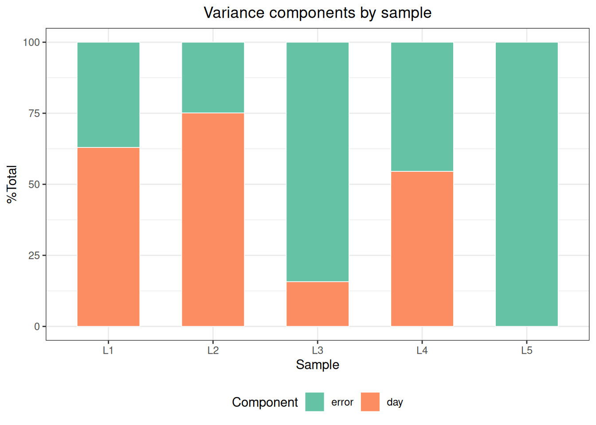
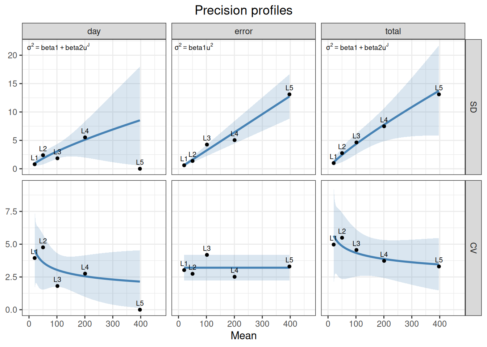

%%{init: {"theme":"base","themeVariables":{"primaryColor":"#EAF2FB","primaryBorderColor":"#2780E3","primaryTextColor":"#212529","lineColor":"#6C757D","secondaryColor":"#EAF7E6","tertiaryColor":"#FFF4E8","fontSize":"13px"},"flowchart":{"nodeSpacing":18,"rankSpacing":24,"padding":6}}}%%
flowchart LR
A["核对天、站点、运行<br/>和重复设计"] --> B["precision()<br/>建立方差分量对象"]
B --> C["outlier() / normal()<br/>诊断"]
C --> D["variance() / vc()<br/>VC、SD、CV"]
D --> E["ci()<br/>分量及合成区间"]
E --> F["profile()<br/>浓度相关精密度"]
F --> G["report()<br/>EP05/EP15 术语表"]
G --> H["与预设精密度限比较"]
classDef input fill:#EAF2FB,stroke:#2780E3,color:#212529
classDef process fill:#EAF7E6,stroke:#3FB618,color:#212529
classDef output fill:#F4EEFB,stroke:#9954BB,color:#212529
class A input
class B,C,D,E,F,G process
class H output
13 精密度分析
精密度（precision）评价同一测量系统在可重复条件下对同一样品测得结果之间的一致程度， 通常用标准差（SD）或变异系数（CV%）表示。CLSI EP05 将精密度按条件细分为批内（within-run）、 批间（between-run）和日间（between-day）等方差分量，并给出各分量的估计、置信区间以及用于判定的可接受限。
本文演示如何使用 ivdtools 包的 precision() 建立不精密度方差分量分析，完成异常值检查、正态性 评估、方差分量与置信区间估计、Sadler 精密度剖面拟合，并把结果重排为 EP05 风格的方差分量表。
分析流程：从重复测量到精密度声明
代码
library(ivdtools)
library(readr)13.1 主要函数
| 函数 | 主要用途 | 关键输入或输出 |
|---|---|---|
precision() |
创建精密度方差分量分析对象 | 嵌套公式、by 分组、平衡性检查 |
outlier() |
逐样本异常值检测 | Grubbs 或 IQR 方法 |
normal() |
逐样本正态性检验 | Shapiro-Wilk 等，level 控制置信水平 |
variance() / vc() |
估计方差分量 | VC、%Total、SD、CV%，NegVC 在此传入 |
ci() |
模型分量及总分量 SD/CV 的置信区间 | Satterthwaite 近似 |
profile() |
Sadler 精密度剖面拟合 | 10 个候选模型、AIC 选优 |
report() |
生成 EP05 结构化报告表 | day、run、site 显式映射 |
list_sadler() |
查看 10 个 Sadler 模型 | 模型公式与类型 |
summary() / plot() |
汇总与绘图 | plot(type=...) 选择图形 |
precision() 创建对象后，分析结果通过 outlier()、normal()、variance()、ci()、profile() 逐步累积到对象中，必须重新赋值。只有已执行的分析才出现在 summary() 中，且 plot() 的某些图形依赖前置分析。
代码
precision(data, form, by = NULL)
variance(x, digits = 4, method = c("auto", "anova", "reml"),
NegVC = FALSE)
ci(x, digits = 4)
profile(object, model.no = 1:10)
report(x, day, run = NULL, site = NULL,
table = c("simple", "detailed", "CI"), digits = 4)数据格式要求：
precision()最终调用VCA::anovaVCA()，要求普通data.frame。用readr::read_csv()读入的是 tibble，因此本文统一先转为data.frame，再把实验因子列（天、批、复孔等）转为因子。
以两层嵌套设计为例，
\[ Y_{d r k}=\mu+D_d+R_{r(d)}+\varepsilon_{d r k}, \]
并假定各随机项相互独立、均值为零。总方差、SD 和 CV 为
\[ \sigma_T^2=\sigma_D^2+\sigma_{R(D)}^2+\sigma_e^2,\qquad SD_T=\sqrt{\sigma_T^2},\qquad CV_T=100\,SD_T/\bar Y. \]
form 右侧必须真实对应随机分层；重复层通常由残差 error 表示。by 只把不同样本或浓度分别拟合，不会把它们合成一个共同方差。method="auto" 逐组调用 VCA::isBalanced()：平衡时使用 anovaVCA()，否则使用 remlVCA()。ANOVA 和 REML 的估计及自由度可能不同，报告必须保存实际 Method。
variance() 保存数值型 results[[样本]]$vc、sd_comp 和 cv_comp，而展示表 vc 为格式化结果；后续计算应使用前者。ci() 需在 variance() 后执行，并通过 VCA::VCAinference() 给出双侧 SD/CV 区间。profile() 在至少三个有效浓度水平上拟合 \(SD=f(\bar Y;\theta)\) 的 Sadler/VFP 候选族，以 AIC 选择模型；外推到观测浓度范围之外应谨慎。
report() 是 EP05 术语映射器：单中心设计显式给出 day 和 run，多中心设计再给出 site；它会拒绝未映射或不符合支持结构的公式。交互项按所含因子匹配，因此 site:day 与 day:site视为同一分量。table="CI" 还要求已经执行 ci()；多中心实验室内精密度等合成量由 report() 利用方差分量协方差矩阵和 Satterthwaite 有效自由度计算区间，而再现性使用全部分量。
precision() 返回精密度分析对象；outlier()、normal()、variance()、ci() 和 profile() 返回写入相应结果槽的更新对象；report() 返回结构化报告表；list_sadler() 返回模型注册表；plot() 返回 ggplot 对象。
13.2 分析案例
13.2.1 示例一：EP05 20×2×2 单样本精密度
20×2×2 指 20 天、每天 2 批、每批 2 个重复，共 80 个结果，是 EP05 的经典设计之一：
代码
ep05 <- read_csv("./data/013-精密度分析/precision-ep05.csv", show_col_types = FALSE)
ep05 <- as.data.frame(ep05)实验因子列在 CSV 中为整数，读取后转换为因子：
代码
ep05$day <- factor(ep05$day)
ep05$run <- factor(ep05$run)
ep05$rep <- factor(ep05$rep)
head(ep05, 6) day run rep value
1 1 1 1 96.94
2 1 1 2 93.48
3 1 2 1 99.28
4 1 2 2 101.54
5 2 1 1 102.96
6 2 1 2 102.85value ~ day/run 表示方差分量按 日间（day）→ 日内的批（run）逐层嵌套。 / 是嵌套记法，等价于把每个深一层因子视为上一层因子的分组内因子。
创建分析对象：
代码
p <- precision(ep05, value ~ day/run)
pPrecision analysis object
Data class : data.frame
Total rows : 80
Formula : value ~ day/run
Samples : 1
Factor levels
day : 1 (4), 2 (4), 3 (4), 4 (4), 5 (4), 6 (4), 7 (4), 8 (4), 9 (4), 10 (4), 11 (4), 12 (4), 13 (4), 14 (4), 15 (4), 16 (4), 17 (4), 18 (4), 19 (4), 20 (4)
run : 1 (40), 2 (40)
rep : 1 (40), 2 (40)
Analysis status
[ ] outlier
[ ] normal
[ ] variance
[ ] ci
[ ] profile平衡性检查输出提示最大/最小单元大小之比。
逐样本做异常值检测和正态性检验：
代码
p <- outlier(p, method = "grubbs")Outlier detection -- Grubbs (alpha = 0.05)
No outliers detected.代码
p <- normal(p, method = "shapiro")Normality test -- Shapiro-Wilk
Sample n Method Statistic p-value
---------------------------------------------------------------------------
all 80 Shapiro-Wilk W=0.9868 0.5858参数说明：
outlier()的method可选"grubbs"（默认）或"iqr"，alpha为 Grubbs 显著性水平。normal()的method="auto"会根据样本量选择检验（n≤50 用 Shapiro-Wilk、更大用 Anderson-Darling 等）；指定method="shapiro"时输出的W列才是真正的 Shapiro-Wilk W 统计量。 单样本数据 n=80，两种方式均可接受，本示例显式指定以便展示。
方差分量与置信区间：
代码
p <- variance(p)Variance components
sample component VC %Total SD CV[%] Method
-----------------------------------------------------
all day 18.8358 42.6 4.3400 4.3788 anova
all day:run 17.4343 39.4 4.1754 4.2128 anova
all error 7.9482 18.0 2.8193 2.8445 anova NegVC 参数需要在 variance() 处传入：
代码
p <- variance(p, NegVC = TRUE) # 允许负方差分量（默认 FALSE）代码
p <- ci(p)Confidence intervals (SD)
sample component estimate lower upper
----------------------------------------
all total 6.6497 5.4288 8.5842
all day 4.3400 0.0000 6.2255
all day:run 4.1754 2.0129 5.5513
all error 2.8193 2.3147 3.6073
Confidence intervals (%CV)
sample component estimate lower upper
----------------------------------------
all total 6.7091 5.4773 8.6609
all day 4.3788 0.0000 6.2812
all day:run 4.2128 2.0309 5.6009
all error 2.8445 2.3353 3.6395 ci() 采用 Satterthwaite 有效自由度近似计算各分量 SD 与 CV 的置信区间。
散点图可用于快速识别测试异常和测值分布情况：
代码
plot(p, type = "dot")
代码
plot(p, type = "qq")
图形依赖：
plot(type="dot")为按运行顺序的散点（无需前置分析），type="his"为标准直方图；type="var"需要先执行variance()，type="qq"需要先执行normal()，type="profile"需要先执行profile()。绘图前请确认对应分析已运行。
代码
summary(p)
Precision analysis -- summary
----------------------------------------
Precision analysis object
Data class : data.frame
Total rows : 80
Formula : value ~ day/run
Samples : 1
Factor levels
day : 1 (4), 2 (4), 3 (4), 4 (4), 5 (4), 6 (4), 7 (4), 8 (4), 9 (4), 10 (4), 11 (4), 12 (4), 13 (4), 14 (4), 15 (4), 16 (4), 17 (4), 18 (4), 19 (4), 20 (4)
run : 1 (40), 2 (40)
rep : 1 (40), 2 (40)
Analysis status
[x] outlier
[x] normal
[x] variance
[x] ci
[ ] profile
Outlier detection -- Grubbs (alpha = 0.05)
No outliers detected.
Normality test -- Shapiro-Wilk
Sample n Method Statistic p-value
---------------------------------------------------------------------------
all 80 Shapiro-Wilk W=0.9868 0.5858
Variance components
sample component VC %Total SD CV[%] Method
-----------------------------------------------------
all day 18.8358 42.6 4.3400 4.3788 anova
all day:run 17.4343 39.4 4.1754 4.2128 anova
all error 7.9482 18.0 2.8193 2.8445 anova
Confidence intervals (SD)
sample component estimate lower upper
----------------------------------------
all total 6.6497 5.4288 8.5842
all day 4.3400 0.0000 6.2255
all day:run 4.1754 2.0129 5.5513
all error 2.8193 2.3147 3.6073
Confidence intervals (%CV)
sample component estimate lower upper
----------------------------------------
all total 6.7091 5.4773 8.6609
all day 4.3788 0.0000 6.2812
all day:run 4.2128 2.0309 5.6009
all error 2.8445 2.3353 3.6395 13.2.2 示例二：多样本3×5与 Sadler 剖面
当需要评价多个浓度水平时，用 by 指定样本分组列，各样本分别估计方差分量：
代码
profile_data <- as.data.frame(read_csv(
"./data/013-精密度分析/precision-profile.csv",
show_col_types = FALSE
))
profile_data$sample <- factor(profile_data$sample)
profile_data$day <- factor(profile_data$day)
profile_data$rep <- factor(profile_data$rep)样本方差分量：
代码
p2 <- precision(profile_data, value ~ day, by = "sample")
p2 <- variance(p2)Variance components
sample component VC %Total SD CV[%] Method
-------------------------------------------------------
L1 day 0.6376 63.0 0.7985 3.9446 anova
L1 error 0.3750 37.0 0.6124 3.0250 anova
L2 day 5.7139 75.1 2.3904 4.7584 anova
L2 error 1.8937 24.9 1.3761 2.7393 anova
L3 day 3.3913 15.7 1.8415 1.8088 anova
L3 error 18.1466 84.3 4.2599 4.1840 anova
L4 day 30.5549 54.6 5.5276 2.7529 anova
L4 error 25.4525 45.4 5.0451 2.5126 anova
L5 day 0.0000 0.0 0.0000 0.0000 anova
L5 error 171.7986 100.0 13.1072 3.3003 anova 代码
p2 <- ci(p2)Confidence intervals (SD)
sample component estimate lower upper
-----------------------------------------
L1 total 1.0063 0.6007 2.9368
L1 day 0.7985 0.0000 1.4267
L1 error 0.6124 0.4391 1.0108
L2 total 2.7582 1.5714 9.9889
L2 day 2.3904 0.0000 4.2023
L2 error 1.3761 0.9868 2.2716
L3 total 4.6409 3.2872 7.8819
L3 day 1.8415 0.0000 4.1779
L3 error 4.2599 3.0547 7.0319
L4 total 7.4838 4.6166 19.1652
L4 day 5.5276 0.0000 10.0268
L4 error 5.0451 3.6177 8.3280
L5 total 13.1072 9.5629 20.8255
L5 day 0.0000 NA NA
L5 error 13.1072 9.3990 21.6365
Confidence intervals (%CV)
sample component estimate lower upper
-----------------------------------------
L1 total 4.9710 2.9673 14.5079
L1 day 3.9446 0.0000 7.0480
L1 error 3.0250 2.1692 4.9936
L2 total 5.4905 3.1281 19.8843
L2 day 4.7584 0.0000 8.3652
L2 error 2.7393 1.9643 4.5219
L3 total 4.5583 3.2287 7.7416
L3 day 1.8088 0.0000 4.1035
L3 error 4.1840 3.0003 6.9067
L4 total 3.7271 2.2992 9.5447
L4 day 2.7529 0.0000 4.9936
L4 error 2.5126 1.8017 4.1476
L5 total 3.3003 2.4078 5.2436
L5 day 0.0000 NA NA
L5 error 3.3003 2.3666 5.4478 比较样本的变异比例，可用于产品优化和检验方案设计：
代码
plot(p2, type = "var")
profile() 对每个方差分量拟合 Sadler 模型族，按 AIC 选出最优模型：
代码
list_sadler()Sadler Precision Profile Models
1 Constant variance sigma^2 = beta1
2 Constant CV sigma^2 = beta1 * u^2
3 Mixed (const + prop var) sigma^2 = beta1 + beta2 * u^2
4 Constrained power (const exponent) sigma^2 = (beta1 + beta2 * u)^2
5 Alternative constrained power sigma^2 = beta1 + beta2 * u^K
6 Unconstrained power (with min) sigma^2 = beta1 + beta2 * u + beta3 * u^J
7 Alternative unconstrained power sigma^2 = beta1 + beta2 * u^J
8 Unconstrained power (Sadler default) sigma^2 = (beta1 + beta2 * u)^J
9 CLSI EP17-like sigma^2 = beta1 * u^J
10 CLSI EP17 exact (log-log) CV = beta1 * u^J代码
p2 <- profile(p2, model.no = 1:10)Precision profiles -- Sadler
total: sigma^2 = 0.0000 + 0.0086 * u^J (AIC = 56.45, R^2 = 0.9847)
day: sigma^2 = 0.0000 + 0.0095 * u^J (AIC = 43.46, R^2 = 0.8919)
error: sigma^2 = 0.0010 * u^2 (AIC = 55.96, R^2 = 0.9806)代码
plot(p2, type = "profile")
参数说明：
profile(model.no = 1:10)指定候选模型序号；...可传给内部 Sadler 拟合（例如K）。 每个方差分量至少需要 3 个样本具有有限 SD 才能拟合，因此多样本设计至少应设 3 个浓度水平。 剖面可用于功能灵敏度等分析中预测任意浓度下的 SD/CV。
13.2.3 示例三：多样本多中心（站点）精密度
数据包含 2 个站点（site）、3 个样本（sample），每站点每样本 3 天 × 3 批 × 5 复孔：
代码
sites_data <- as.data.frame(read_csv(
"./data/013-精密度分析/precision-sites.csv",
show_col_types = FALSE
))
sites_data[] <- lapply(sites_data, function(x)
if (is.numeric(x) && all(x == round(x))) factor(x) else x)
head(sites_data, 6) site sample day run rep value
1 A S1 1 1 1 49.24
2 A S1 1 1 2 52.31
3 A S1 1 1 3 48.75
4 A S1 1 1 4 49.39
5 A S1 1 1 5 51.54
6 A S1 1 2 1 51.69代码
p3 <- precision(sites_data, value ~ site/day/run, by = "sample")
p3 <- variance(p3)Variance components
sample component VC %Total SD CV[%] Method
--------------------------------------------------------
S1 site 0.2746 10.4 0.5241 1.0550 anova
S1 site:day 0.0000 0.0 0.0000 0.0000 anova
S1 site:day:run 0.3553 13.4 0.5960 1.1998 anova
S1 error 2.0231 76.3 1.4223 2.8632 anova
S2 site 0.7117 8.6 0.8436 0.8359 anova
S2 site:day 0.1018 1.2 0.3191 0.3162 anova
S2 site:day:run 0.9106 11.0 0.9543 0.9456 anova
S2 error 6.5670 79.2 2.5626 2.5392 anova
S3 site 22.0901 42.6 4.7000 2.3517 anova
S3 site:day 2.6252 5.1 1.6202 0.8107 anova
S3 site:day:run 0.0000 0.0 0.0000 0.0000 anova
S3 error 27.1915 52.4 5.2145 2.6091 anova 代码
knitr::kable(report(p3, run = "run", day = "day", site = "site"))| Sample Description | Mean Value | Repeatability SD | %CV Repeatability | Reproducibility SD | %CV Reproducibility |
|---|---|---|---|---|---|
| S1 | 49.6766 | 1.4223 | 2.8632 | 1.6288 | 3.2788 |
| S2 | 100.9203 | 2.5626 | 2.5392 | 2.8794 | 2.8532 |
| S3 | 199.8592 | 5.2145 | 2.6091 | 7.2046 | 3.6049 |
按站点拆分单独分析，by 可接受多个列名，内部按交互作用分组，一次得到所有站点 × 样本组合：
代码
p3s <- precision(sites_data, value ~ day/run, by = c("site", "sample"))
p3s <- variance(p3s)Variance components
sample component VC %Total SD CV[%] Method
-----------------------------------------------------
A.S1 day 0.0000 0.0 0.0000 0.0000 anova
A.S1 day:run 0.1646 6.8 0.4057 0.8231 anova
A.S1 error 2.2677 93.2 1.5059 3.0553 anova
B.S1 day 0.0000 0.0 0.0000 0.0000 anova
B.S1 day:run 0.5459 23.5 0.7389 1.4758 anova
B.S1 error 1.7784 76.5 1.3335 2.6637 anova
A.S2 day 0.3241 4.3 0.5693 0.5602 anova
A.S2 day:run 0.1523 2.0 0.3903 0.3840 anova
A.S2 error 7.0483 93.7 2.6549 2.6124 anova
B.S2 day 0.0000 0.0 0.0000 0.0000 anova
B.S2 day:run 1.6690 21.5 1.2919 1.2891 anova
B.S2 error 6.0856 78.5 2.4669 2.4616 anova
A.S3 day 4.4871 15.6 2.1183 1.0420 anova
A.S3 day:run 1.7006 5.9 1.3041 0.6415 anova
A.S3 error 22.5797 78.5 4.7518 2.3375 anova
B.S3 day 0.7633 2.3 0.8737 0.4448 anova
B.S3 day:run 0.0000 0.0 0.0000 0.0000 anova
B.S3 error 31.8033 97.7 5.6394 2.8709 anova 代码
knitr::kable(report(p3s, run = "run", day = "day"))| Sample Description | Mean Value | Repeatability SD | %CV Repeatability | Within-Laboratory Precision SD | %CV Within-Laboratory Precision |
|---|---|---|---|---|---|
| A.S1 | 49.2884 | 1.5059 | 3.0553 | 1.5596 | 3.1642 |
| B.S1 | 50.0647 | 1.3335 | 2.6637 | 1.5246 | 3.0452 |
| A.S2 | 101.6249 | 2.6549 | 2.6124 | 2.7431 | 2.6993 |
| B.S2 | 100.2158 | 2.4669 | 2.4616 | 2.7847 | 2.7787 |
| A.S3 | 203.2864 | 4.7518 | 2.3375 | 5.3635 | 2.6384 |
| B.S3 | 196.4320 | 5.6394 | 2.8709 | 5.7067 | 2.9052 |
13.2.4 示例四：自定义的更复杂模型
除标准的天/批/重复嵌套外，precision() 的公式可以是任意 VCA 嵌套结构，例如再加入操作者 （operator）层：value ~ operator/day/run，即 操作者 → 天 → 批 逐层嵌套：
代码
custom_data <- as.data.frame(read_csv(
"./data/013-精密度分析/precision-custom.csv",
show_col_types = FALSE
))
custom_data[] <- lapply(custom_data, function(x)
if (is.numeric(x) && all(x == round(x))) factor(x) else x)代码
p4 <- precision(custom_data, value ~ operator/day/run)
p4 <- variance(p4)Variance components
sample component VC %Total SD CV[%] Method
-----------------------------------------------------------
all operator 2.2914 11.8 1.5137 1.4898 anova
all operator:day 6.3159 32.4 2.5132 2.4734 anova
all operator:day:run 3.2463 16.7 1.8017 1.7733 anova
all error 7.6322 39.2 2.7627 2.7190 anova 13.2.5 标准案例：CLSI EP05-A3 附录 A 葡萄糖 20×2×2
附录 A 使用一个患者血浆池，在 20 天内每天测量 2 批、每批 2 次，共 80 个葡萄糖结果。数据完整且平衡；嵌套结构明确为 day/run，重复测量构成残差层。
代码
ep05_a <- as.data.frame(read_csv(
"./data/013-精密度分析/std-ep05-appendix-a-glucose.csv",
show_col_types = FALSE
))
ep05_a$day <- factor(ep05_a$day)
ep05_a$run <- factor(ep05_a$run)
ep05_a$replicate <- factor(ep05_a$replicate)代码
ep05_a_precision <- precision(
ep05_a, form = result ~ day/run
)
ep05_a_precision <- variance(ep05_a_precision, NegVC = FALSE)Variance components
sample component VC %Total SD CV[%] Method
----------------------------------------------------
all day 1.9586 15.1 1.3995 0.5731 anova
all day:run 3.0750 23.8 1.7536 0.7181 anova
all error 7.9000 61.1 2.8107 1.1510 anova 代码
ep05_a_precision <- ci(ep05_a_precision)Confidence intervals (SD)
sample component estimate lower upper
----------------------------------------
all total 3.5963 3.0696 4.3430
all day 1.3995 0.0000 2.4622
all day:run 1.7536 0.0000 2.7858
all error 2.8107 2.3076 3.5963
Confidence intervals (%CV)
sample component estimate lower upper
----------------------------------------
all total 1.4727 1.2570 1.7785
all day 0.5731 0.0000 1.0083
all day:run 0.7181 0.0000 1.1408
all error 1.1510 0.9450 1.4727 代码
knitr::kable(report(
ep05_a_precision,
day = "day", run = "run", digits = 6
))| Sample Description | Mean Value | Repeatability SD | %CV Repeatability | Within-Laboratory Precision SD | %CV Within-Laboratory Precision |
|---|---|---|---|---|---|
| all | 244.2 | 2.810694 | 1.15098 | 3.596325 | 1.472697 |
| 标准位置 | 统计量 | 标准结果 | ivdtools结果 |
|---|---|---|---|
| EP05-A3 Appendix A | mean | 244.20 | 244.2000 |
| EP05-A3 Appendix A | SS_day | 415.80 | 415.8000 |
| EP05-A3 Appendix A | SS_run_day | 281.00 | 281.0000 |
| EP05-A3 Appendix A | SS_error | 316.00 | 316.0000 |
| EP05-A3 Appendix A | MS_day | 21.88 | 21.8842 |
| EP05-A3 Appendix A | MS_run_day | 14.05 | 14.0500 |
| EP05-A3 Appendix A | MS_error | 7.90 | 7.9000 |
| EP05-A3 Appendix A | V_day | 1.96 | 1.9586 |
| EP05-A3 Appendix A | V_run | 3.08 | 3.0750 |
| EP05-A3 Appendix A | V_error | 7.90 | 7.9000 |
| EP05-A3 Appendix A | SD_repeatability | 2.81 | 2.8107 |
| EP05-A3 Appendix A | SD_within_lab | 3.60 | 3.5963 |
| EP05-A3 Appendix A | CV_repeatability | 1.20 | 1.1510 |
| EP05-A3 Appendix A | CV_within_lab | 1.50 | 1.4727 |
13.2.6 标准案例：CLSI EP05-A3 附录 B CA19-9 多中心研究
附录 B 包含 3 个中心、6 个样品、每中心 5 天、每天 5 次重复，共 450 条结果。三个中心使用不同仪器和操作者，但使用相同试剂批与校准品批；嵌套模型为 site/day，重复测量构成残差层。
代码
ep05_b <- as.data.frame(read_csv(
"./data/013-精密度分析/std-ep05-appendix-b-ca19-9.csv",
show_col_types = FALSE
))
ep05_b$sample <- factor(ep05_b$sample)
ep05_b$site <- factor(ep05_b$site)
ep05_b$day <- factor(ep05_b$day)
ep05_b$replicate <- factor(ep05_b$replicate)代码
ep05_b_precision <- precision(
ep05_b, form = result ~ site/day, by = "sample"
)
ep05_b_precision <- variance(ep05_b_precision)Variance components
sample component VC %Total SD CV[%] Method
-------------------------------------------------------
P1 site 0.3843 35.4 0.6199 5.1312 anova
P1 site:day 0.1778 16.4 0.4216 3.4899 anova
P1 error 0.5248 48.3 0.7244 5.9963 anova
P2 site 1.6189 47.9 1.2724 3.0597 anova
P2 site:day 0.1232 3.6 0.3509 0.8439 anova
P2 error 1.6348 48.4 1.2786 3.0747 anova
P5 site 24.9068 29.3 4.9907 1.3165 anova
P5 site:day 3.1861 3.7 1.7850 0.4709 anova
P5 error 56.9669 67.0 7.5476 1.9910 anova
Q3 site 3.1742 60.4 1.7816 3.1959 anova
Q3 site:day 0.5232 10.0 0.7233 1.2975 anova
Q3 error 1.5599 29.7 1.2490 2.2404 anova
Q4 site 30.0735 75.7 5.4839 3.3104 anova
Q4 site:day 1.8663 4.7 1.3661 0.8247 anova
Q4 error 7.8128 19.7 2.7951 1.6873 anova
Q6 site 164.1097 68.1 12.8105 3.0922 anova
Q6 site:day 3.0208 1.3 1.7380 0.4195 anova
Q6 error 73.9590 30.7 8.5999 2.0758 anova 代码
ep05_b_precision <- ci(ep05_b_precision)Confidence intervals (SD)
sample component estimate lower upper
-----------------------------------------
P1 total 1.0425 0.7415 1.7535
P1 site 0.6199 0.0000 1.1178
P1 site:day 0.4216 0.0000 0.6380
P1 error 0.7244 0.6148 0.8819
P2 total 1.8376 1.2313 3.5995
P2 site 1.2724 0.0000 2.2291
P2 site:day 0.3509 0.0000 0.7084
P2 error 1.2786 1.0852 1.5566
P5 total 9.2228 6.9060 13.8849
P5 site 4.9907 0.0000 8.9156
P5 site:day 1.7850 0.0000 3.9426
P5 error 7.5476 6.4058 9.1888
Q3 total 2.2929 1.4259 5.7003
Q3 site 1.7816 0.0000 3.1184
Q3 site:day 0.7233 0.0000 1.0958
Q3 error 1.2490 1.0600 1.5205
Q4 total 6.3050 3.6468 21.1983
Q4 site 5.4839 0.0000 9.5060
Q4 site:day 1.3661 0.0000 2.1602
Q4 error 2.7951 2.3723 3.4029
Q6 total 15.5271 9.3516 43.6651
Q6 site 12.8105 0.0000 22.1981
Q6 site:day 1.7380 0.0000 4.2690
Q6 error 8.5999 7.2989 10.4699
Confidence intervals (%CV)
sample component estimate lower upper
-----------------------------------------
P1 total 8.6292 6.1376 14.5139
P1 site 5.1312 0.0000 9.2524
P1 site:day 3.4899 0.0000 5.2812
P1 error 5.9963 5.0891 7.3001
P2 total 4.4191 2.9611 8.6559
P2 site 3.0597 0.0000 5.3606
P2 site:day 0.8439 0.0000 1.7036
P2 error 3.0747 2.6095 3.7433
P5 total 2.4329 1.8217 3.6627
P5 site 1.3165 0.0000 2.3518
P5 site:day 0.4709 0.0000 1.0400
P5 error 1.9910 1.6898 2.4239
Q3 total 4.1130 2.5578 10.2254
Q3 site 3.1959 0.0000 5.5938
Q3 site:day 1.2975 0.0000 1.9656
Q3 error 2.2404 1.9015 2.7276
Q4 total 3.8061 2.2014 12.7966
Q4 site 3.3104 0.0000 5.7384
Q4 site:day 0.8247 0.0000 1.3040
Q4 error 1.6873 1.4320 2.0542
Q6 total 3.7479 2.2573 10.5398
Q6 site 3.0922 0.0000 5.3581
Q6 site:day 0.4195 0.0000 1.0305
Q6 error 2.0758 1.7618 2.5272 代码
ep05_b_report <- report(
ep05_b_precision,
day = "day", site = "site", table = "detailed", digits = 6
)
ep05_b_report_ci <- report(
ep05_b_precision,
day = "day", site = "site", table = "CI", digits = 6
)| 标准位置 | 统计量 | 标准结果 | ivdtools结果 |
|---|---|---|---|
| EP05-A3 Appendix B | P1_mean | 12.100 | 12.0813 |
| EP05-A3 Appendix B | P1_SD_R | 0.724 | 0.7244 |
| EP05-A3 Appendix B | P1_SD_WL | 0.838 | 0.8382 |
| EP05-A3 Appendix B | P1_SD_REP | 1.040 | 1.0425 |
| EP05-A3 Appendix B | P1_CV_R | 6.000 | 5.9963 |
| EP05-A3 Appendix B | P1_CV_WL | 6.900 | 6.9379 |
| EP05-A3 Appendix B | P1_CV_REP | 8.600 | 8.6292 |
| EP05-A3 Appendix B | P2_mean | 41.600 | 41.5840 |
| EP05-A3 Appendix B | P2_SD_R | 1.280 | 1.2786 |
| EP05-A3 Appendix B | P2_SD_WL | 1.330 | 1.3259 |
| EP05-A3 Appendix B | P2_SD_REP | 1.840 | 1.8376 |
| EP05-A3 Appendix B | P2_CV_R | 3.100 | 3.0747 |
| EP05-A3 Appendix B | P2_CV_WL | 3.200 | 3.1884 |
| EP05-A3 Appendix B | P2_CV_REP | 4.400 | 4.4191 |
| EP05-A3 Appendix B | P5_mean | 379.000 | 379.0907 |
| EP05-A3 Appendix B | P5_SD_R | 7.550 | 7.5476 |
| EP05-A3 Appendix B | P5_SD_WL | 7.760 | 7.7558 |
| EP05-A3 Appendix B | P5_SD_REP | 9.220 | 9.2228 |
| EP05-A3 Appendix B | P5_CV_R | 2.000 | 1.9910 |
| EP05-A3 Appendix B | P5_CV_WL | 2.000 | 2.0459 |
| EP05-A3 Appendix B | P5_CV_REP | 2.400 | 2.4329 |
| EP05-A3 Appendix B | Q3_mean | 55.700 | 55.7467 |
| EP05-A3 Appendix B | Q3_SD_R | 1.250 | 1.2490 |
| EP05-A3 Appendix B | Q3_SD_WL | 1.440 | 1.4433 |
| EP05-A3 Appendix B | Q3_SD_REP | 2.290 | 2.2929 |
| EP05-A3 Appendix B | Q3_CV_R | 2.200 | 2.2404 |
| EP05-A3 Appendix B | Q3_CV_WL | 2.600 | 2.5890 |
| EP05-A3 Appendix B | Q3_CV_REP | 4.100 | 4.1130 |
| EP05-A3 Appendix B | Q4_mean | 166.000 | 165.6560 |
| EP05-A3 Appendix B | Q4_SD_R | 2.800 | 2.7951 |
| EP05-A3 Appendix B | Q4_SD_WL | 3.110 | 3.1111 |
| EP05-A3 Appendix B | Q4_SD_REP | 6.300 | 6.3050 |
| EP05-A3 Appendix B | Q4_CV_R | 1.700 | 1.6873 |
| EP05-A3 Appendix B | Q4_CV_WL | 1.900 | 1.8781 |
| EP05-A3 Appendix B | Q4_CV_REP | 3.800 | 3.8061 |
| EP05-A3 Appendix B | Q6_mean | 414.000 | 414.2867 |
| EP05-A3 Appendix B | Q6_SD_R | 8.600 | 8.5999 |
| EP05-A3 Appendix B | Q6_SD_WL | 8.770 | 8.7738 |
| EP05-A3 Appendix B | Q6_SD_REP | 15.500 | 15.5271 |
| EP05-A3 Appendix B | Q6_CV_R | 2.100 | 2.0758 |
| EP05-A3 Appendix B | Q6_CV_WL | 2.100 | 2.1178 |
| EP05-A3 Appendix B | Q6_CV_REP | 3.700 | 3.7479 |
13.2.7 标准案例：CLSI EP15-A3 铁蛋白 5×5 验证
EP15 的完整案例含 3 个血清铁蛋白水平，每个水平连续测量 5 日，每日重复 5 次。先保留完整的原始数据，再按标准案例预先规定的 Grubbs 判定排除样品 1 第 1 日第 3 次的 30.2 µg/L。该排除是对标准案例处理的复现，不是本段代码事后自动选择的结果。
代码
ep15_ferritin_raw <- as.data.frame(read_csv(
"./data/013-精密度分析/std-ep15-ferritin.csv", show_col_types = FALSE
))
ep15_ferritin_raw$sample <- factor(ep15_ferritin_raw$sample)
ep15_ferritin_raw$run <- factor(ep15_ferritin_raw$run)
ep15_ferritin_raw$replicate <- factor(ep15_ferritin_raw$replicate)
ep15_exclude <- with(
ep15_ferritin_raw,
sample == 1L & run == 1L & replicate == 3L
)
ep15_ferritin_raw[ep15_exclude, ] run replicate sample result
7 1 3 1 30.2代码
# 排除该值
ep15_ferritin <- ep15_ferritin_raw[!ep15_exclude, ]排除后，样品 1 保留 24 个结果，其中第 1 日有 4 个重复；样品 2 和样品 3 各保留 25 个结果。先按样品水平拆分，再依次建立三个 result ~ run 单因素模型。run 表示日（运行）间分量，每日的重复测量落入残差 error 分量。
代码
# 为方便比较ANOVA与REML差异，特别将样本分开处理
ep15_ferritin_list <- split(ep15_ferritin, ep15_ferritin$sample)
ep15_level_1 <- droplevels(ep15_ferritin_list[["1"]])
ep15_level_2 <- droplevels(ep15_ferritin_list[["2"]])
ep15_level_3 <- droplevels(ep15_ferritin_list[["3"]])
# 样品 1
ep15_level_1_fit <- precision(ep15_level_1, result ~ run)
# 不平衡时模型会自动切换至REML
ep15_level_1_fit_r <- variance(
ep15_level_1_fit, NegVC = FALSE
)Variance components
sample component VC %Total SD CV[%] Method
----------------------------------------------------
all run 0.2820 27.5 0.5311 2.0816 reml
all error 0.7423 72.5 0.8616 3.3770 reml 代码
# 为与标准案例的单因素 ANOVA 口径一致，此处需显式使用 `method = "anova"`
ep15_level_1_fit <- variance(
ep15_level_1_fit, method = "anova", NegVC = FALSE
)Variance components
sample component VC %Total SD CV[%] Method
----------------------------------------------------
all run 0.2804 27.4 0.5295 2.0756 anova
all error 0.7414 72.6 0.8610 3.3749 anova 代码
ep15_level_1_fit <- ci(ep15_level_1_fit, digits = 6)Confidence intervals (SD)
sample component estimate lower upper
--------------------------------------------
all total 1.010837 0.752556 1.539604
all run 0.529550 0.000000 0.944544
all error 0.861028 0.654803 1.257592
Confidence intervals (%CV)
sample component estimate lower upper
--------------------------------------------
all total 3.962125 2.949754 6.034706
all run 2.075649 0.000000 3.702279
all error 3.374924 2.566597 4.929319 代码
# 样品 2
ep15_level_2_fit <- precision(ep15_level_2, result ~ run)
ep15_level_2_fit <- variance(
ep15_level_2_fit, method = "anova", NegVC = FALSE
)Variance components
sample component VC %Total SD CV[%] Method
----------------------------------------------------
all run 2.5400 44.6 1.5937 1.1374 anova
all error 3.1600 55.4 1.7776 1.2687 anova 代码
ep15_level_2_fit <- ci(ep15_level_2_fit, digits = 6)Confidence intervals (SD)
sample component estimate lower upper
--------------------------------------------
all total 2.387467 1.701094 3.999257
all run 1.593738 0.000000 2.636950
all error 1.777639 1.359999 2.567034
Confidence intervals (%CV)
sample component estimate lower upper
--------------------------------------------
all total 1.703873 1.214026 2.854166
all run 1.137409 0.000000 1.881922
all error 1.268655 0.970596 1.832025 代码
# 样品 3
ep15_level_3_fit <- precision(ep15_level_3, result ~ run)
ep15_level_3_fit <- variance(
ep15_level_3_fit, method = "anova", NegVC = FALSE
)Variance components
sample component VC %Total SD CV[%] Method
-------------------------------------------------------
all run 102.6080 47.5 10.1296 1.6262 anova
all error 113.5200 52.5 10.6546 1.7105 anova 代码
ep15_level_3_fit <- ci(ep15_level_3_fit, digits = 6)Confidence intervals (SD)
sample component estimate lower upper
-----------------------------------------------
all total 14.701292 10.382650 25.141336
all run 10.129561 0.000000 16.638736
all error 10.654576 8.151381 15.385949
Confidence intervals (%CV)
sample component estimate lower upper
--------------------------------------------
all total 2.360213 1.666878 4.036305
all run 1.626246 0.000000 2.671259
all error 1.710534 1.308660 2.470130 按相同顺序从每个对象中提取总均值、run 方差分量、error 重复性 SD 和 total 实验室内 SD，然后与标准原文的显示值对照：
| 样品 | 统计量 | 标准结果 | ivdtools结果 |
|---|---|---|---|
| 样品 1 | 总均值 | 25.5000 | 25.5125 |
| 样品 1 | 运行间方差 | 0.2805 | 0.2804 |
| 样品 1 | 重复性 SD | 0.8600 | 0.8610 |
| 样品 1 | 实验室内 SD | 1.0100 | 1.0108 |
| 样品 2 | 总均值 | 140.1000 | 140.1200 |
| 样品 2 | 运行间方差 | 2.5400 | 2.5400 |
| 样品 2 | 重复性 SD | 1.7800 | 1.7776 |
| 样品 2 | 实验室内 SD | 2.4000 | 2.3875 |
| 样品 3 | 总均值 | 623.0000 | 622.8800 |
| 样品 3 | 运行间方差 | 102.6100 | 102.6080 |
| 样品 3 | 重复性 SD | 10.7000 | 10.6546 |
| 样品 3 | 实验室内 SD | 14.7000 | 14.7013 |
三个水平的复算结果与标准显示值一致或接近。样品 1 排除一个结果后为不平衡设计，方差分量的微小差异来自不平衡数据的计算细节和中间舍入；样品 2 的实验室内 SD 精确复算值为 2.3875 µg/L，标准用舍入后的方差分量显示为 2.40 µg/L。标准案例根据其 PI 声明和 UVL 判定三个水平均通过；该结论只适用于案例中给定的声明和限值。
13.2.8 标准案例：WS/T 408—2024 精密度验证
WS/T 408 附录 A.2 使用两个 HDL-C 水平，每个水平测量 5 批，每批 3 次。读入后先核对每个样品、每个批次均有 3 个结果：
代码
wst408_precision <- as.data.frame(read_csv(
"./data/013-精密度分析/std-wst408-precision.csv",
show_col_types = FALSE
))
wst408_precision$sample <- factor(wst408_precision$sample)
wst408_precision$batch <- factor(wst408_precision$batch)
wst408_precision$replicate <- factor(wst408_precision$replicate)代码
wst408_precision_fit <- precision(
wst408_precision,
result ~ batch,
by = "sample"
)
wst408_precision_fit <- variance(
wst408_precision_fit,
method = "anova",
NegVC = FALSE
)Variance components
sample component VC %Total SD CV[%] Method
----------------------------------------------------
样品1 batch 0.0001 10.9 0.0080 0.7637 anova
样品1 error 0.0005 89.1 0.0228 2.1884 anova
样品2 batch 0.0001 12.1 0.0091 0.5892 anova
样品2 error 0.0006 87.9 0.0246 1.5898 anova 代码
wst408_precision_fit <- ci(wst408_precision_fit, digits = 6)Confidence intervals (SD)
sample component estimate lower upper
--------------------------------------------
样品1 total 0.024152 0.017523 0.038843
样品1 batch 0.007958 0.000000 0.020611
样品1 error 0.022804 0.015933 0.040019
样品2 total 0.026268 0.019035 0.042360
样品2 batch 0.009129 0.000000 0.022737
样品2 error 0.024631 0.017210 0.043225
Confidence intervals (%CV)
sample component estimate lower upper
--------------------------------------------
样品1 total 2.317879 1.681694 3.727688
样品1 batch 0.763745 0.000000 1.978014
样品1 error 2.188437 1.529098 3.840561
样品2 total 1.695429 1.228567 2.734049
样品2 batch 0.589202 0.000000 1.467529
样品2 error 1.589755 1.110789 2.789914 | 样品 | 统计量 | 标准结果 | ivdtools结果 |
|---|---|---|---|
| 样品 1 | 总均值 | 1.0420 | 1.0420 |
| 样品 1 | s_WR | 0.0228 | 0.0228 |
| 样品 1 | s_WL | 0.0242 | 0.0242 |
| 样品 1 | CV_WL (%) | NA | 2.3179 |
| 样品 2 | 总均值 | 1.5493 | 1.5493 |
| 样品 2 | s_WR | 0.0246 | 0.0246 |
| 样品 2 | s_WL | 0.0263 | 0.0263 |
| 样品 2 | CV_WL (%) | NA | 1.6954 |
13.2.9 标准案例：YY/T 1789.1—2021 附录 A 25-羟基维生素 D
附录 A 给出完整的 20 天×2 批×2 重复数据，共 80 个结果。
代码
yyt1789_1 <- read.csv(
"./data/013-精密度分析/std-yyt1789-1-appendix-a.csv"
)
yyt1789_1$day <- factor(yyt1789_1$day)
yyt1789_1$run <- factor(yyt1789_1$run)
yyt1789_1_fit <- precision(yyt1789_1, result ~ day/run)
yyt1789_1_fit <- variance(
yyt1789_1_fit, method = "anova"
)Variance components
sample component VC %Total SD CV[%] Method
----------------------------------------------------
all day 0.1769 36.2 0.4206 2.4324 anova
all day:run 0.0648 13.2 0.2545 1.4721 anova
all error 0.2475 50.6 0.4975 2.8773 anova 代码
yyt1789_1_fit <- ci(yyt1789_1_fit)Confidence intervals (SD)
sample component estimate lower upper
----------------------------------------
all total 0.6994 0.5861 0.8674
all day 0.4206 0.0000 0.5991
all day:run 0.2545 0.0000 0.4400
all error 0.4975 0.4084 0.6365
Confidence intervals (%CV)
sample component estimate lower upper
----------------------------------------
all total 4.0450 3.3897 5.0170
all day 2.4324 0.0000 3.4650
all day:run 1.4721 0.0000 2.5448
all error 2.8773 2.3623 3.6815 | 标准位置 | 统计量 | 标准结果 | ivdtools结果 |
|---|---|---|---|
| YY/T 1789.1 Appendix A | mean | 17.290 | 17.2898 |
| YY/T 1789.1 Appendix A | repeatability SD | 0.497 | 0.4975 |
| YY/T 1789.1 Appendix A | within-laboratory SD | 0.699 | 0.6994 |
| YY/T 1789.1 Appendix A | repeatability CV (%) | 2.900 | 2.8773 |
| YY/T 1789.1 Appendix A | within-laboratory CV (%) | 4.000 | 4.0450 |
| YY/T 1789.1 Appendix A | repeatability CI lower | 0.408 | 0.4084 |
| YY/T 1789.1 Appendix A | repeatability CI upper | 0.637 | 0.6365 |
| YY/T 1789.1 Appendix A | within-laboratory CI lower | 0.586 | 0.5861 |
| YY/T 1789.1 Appendix A | within-laboratory CI upper | 0.867 | 0.8674 |